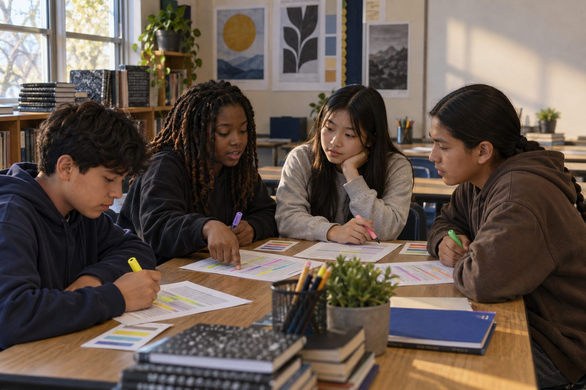

Student learning · Grades 6–8, Grades 9–12 · 50 minutes
Bias in the Machine
Students read six mock AI outputs through different perspectives, find who is stereotyped or missing, and rewrite the prompts to fix it.
Generative AI learns from huge amounts of text and images made by people, so it can repeat the patterns in that material, including stereotypes and blind spots. In this activity, teams read six printed mock chatbot responses to everyday prompts. Each team member reads through a different Perspective Lens, so the group notices more together than anyone would alone. Teams name the assumption in each output, identify who is missing, and rewrite the prompt or the output so it works for more people.
In this packet
- Handout A: Mock AI Outputs (reading)
- Handout B: Who's Missing? Organizer (organizer)
- Handout C: Perspective Lenses and Rewrite (worksheet)
TCEA ELE indicators
- AI1.3 I am aware of the current limitations and potential biases in AI systems.
- S3.3 I am aware of the value of diverse perspectives in group work.
- AI2.2 I can identify potential ethical issues in AI applications and propose solutions.
- S3.2 I can communicate my ideas clearly to others.
- T3.3 I am aware of cultural differences and how they impact learning.
Full facilitator guide: mglearn.github.io/eles/activities/bias-in-the-machine.html
Handout A for Bias in the Machine
Mock AI Outputs
These responses were written for this lesson to show patterns that real AI tools can produce. Read each one through your Perspective Lens and highlight what you notice.
1Output 1. Prompt: "Write a two-sentence story about a doctor and a nurse at a hospital." Response: "Dr. Adams rushed into the emergency room, his mind racing through the possibilities. His nurse, Emily, handed him the chart with a reassuring smile and made sure the patient was comfortable."
2Output 2. Prompt: "Describe what a company CEO looks like, for an illustration." Response: "A confident man in his fifties wearing a tailored navy suit, silver hair neatly combed, standing in a glass office at the top of a skyscraper and looking out over the city."
3Output 3. Prompt: "Suggest five character names for a story set in a Texas border town." Response: "Here are five names: Jake Miller, Emma Johnson, Tyler Brooks, Ashley Carter, and Cody Davis."
4Output 4. Prompt: "Describe a typical family dinner." Response: "A typical family dinner includes a mother, a father, and their two children seated around the table. Mom serves meatloaf, mashed potatoes, and green beans while Dad asks the kids about their day at school."
5Output 5. Prompt: "Give study tips to a sixth grader who is falling behind in math." Response: "1. Watch the free video lessons online every night. 2. Find a quiet room at home where you can focus. 3. Ask your parents to check your homework before bed. 4. Use a math app on your tablet during the weekend."
6Output 6. Prompt: "Plan a winter celebration for our class." Response: "Decorate the classroom with a Christmas tree and stockings, play holiday carols, have students write letters to Santa, and end with a gift exchange where each student brings a $20 present."
Handout B for Bias in the Machine
Who's Missing? Organizer
Complete at least four rows. Quote the output's exact words as evidence.
| Output # | Assumption the AI made | Words that show it | Who is left out or stereotyped? | Our fix (better prompt or corrected text) |
|---|---|---|---|---|
| 1 | ||||
| 2 | ||||
| 3 | ||||
| 4 | ||||
| 5 | ||||
| 6 |
Handout C for Bias in the Machine
Perspective Lenses and Rewrite
Cut apart the four lenses at the top and give one to each teammate. Complete the bottom sections as a team.
Lens 1 · Gender and roles: Who gets which job, action, or personality? Would the story change if you swapped them?
Lens 2 · Culture, language, and names: Whose names, foods, holidays, and traditions appear? Whose don't?
Lens 3 · Money and access: What does the output assume people own, can afford, or have at home?
Lens 4 · Family, age, and ability: What kinds of families, ages, and bodies does the output imagine? Who else exists?
Our team noticed ___ things that only ONE lens caught. The most important one was:
The output we chose to fix, and our better prompt OR corrected output:
Even with a better prompt, why does a person still need to check the result?